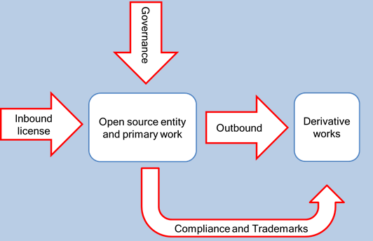

Fun and interactive way to help you learn about:
Project management!
Fun and interactive way to help you learn about:
Project management!
An introduction to IT Project Management.
Open your eyes, Open source
The best way of Learning is by Failing.
Have you actually learned?

Projects in the Information Technology world and Information Systems world can take many shapes and sizes. Linux, a current IT/IS project, arguably one of the greatest projects and successful technology projects in the modern era will be the focal point in this section. Linux has inspired a new methodology of managing software projects and in this section we will look deeper into the root factors which contributed to the success of the Linux Project.
Before we can discuss the contributing factors to the rise of Linux we must first understand what an operating system is and does. An operating system is a computer program that runs on the computer so that it enables the User to interact with the computer. The most common operating system that people are familiar with is the Windows Operating systems. Linux, like Windows, allows the User to interact with the computer. To further explain what the Linux operating system is, please watch this short video. .
Have a look at this short video before you continue:
What is Open Source I hear you ask? Open source Software is software that is computing software or programs that are publicly released with its Source Code made available with the addition of the copyright holder providing anybody the rights to study, change, and distribute the software at their own free will. Having an Open Source systems gives anybody in the world to enhance and add functionality to existing software. This freedom is the back bone of success for the Linux Open Source Project. In addition to having the Source Code Publically available, there is a large community ready to communicate, exchange ideas and solutions. Source Code – This is the computing code that a software engineers writes to create a computer program. Source code can easily read and understood by humans.
Have a look at this short video before you continue:
Here is a diagramatical view of an Open Source Project
In open source software, especially in the case of Linux, problems are dealt with quickly and people can start to code and develop solutions to User problems. Lets contrast this to say a Windows Operating system scenario.
Windows Scenario
The last point is very important and a key aspect to the successful rise of Linux and open source software.
Self Directed Learning task
Where proprietary software falls short compared to Linux and where Linux rises , people can start to code and deploy fixes and share that fix with others so that they can ‘patch’ their own operating system with the fix provided. Another point worth mentioning is that once the code or patch has been posted, other members of the community can then review and make further improvement to the patch.
Self Directed Learning task
Visit http://linuxforums.org.uk/ Go to the fourm and take 10 random posts from a category on the forum. Calculate th average response time for the original posts
A version control system is a repository of files, commonly the files of source code of software. Any change to software can be tracked with version control, accompanied with the time of the change and who had made the change and what the purpose of the change was supposed to do whether the change was an addition of functionality or a patch for a bug. These version control systems are crucial for the development and success of a modern day IS/IT project that requires collaborative work, as it allows the code and progress of a project to be tracked in real time.
More Advantages of version control
Have a look at this short video before you continue:
Self Directed Learning task
Visit HERE and follow through the tutorial so that you can understand and experience the maintenance of a real it Project
If you think you know how Professional Bodies work and their importance to a Computer Scientist, have a go at the quiz: click here